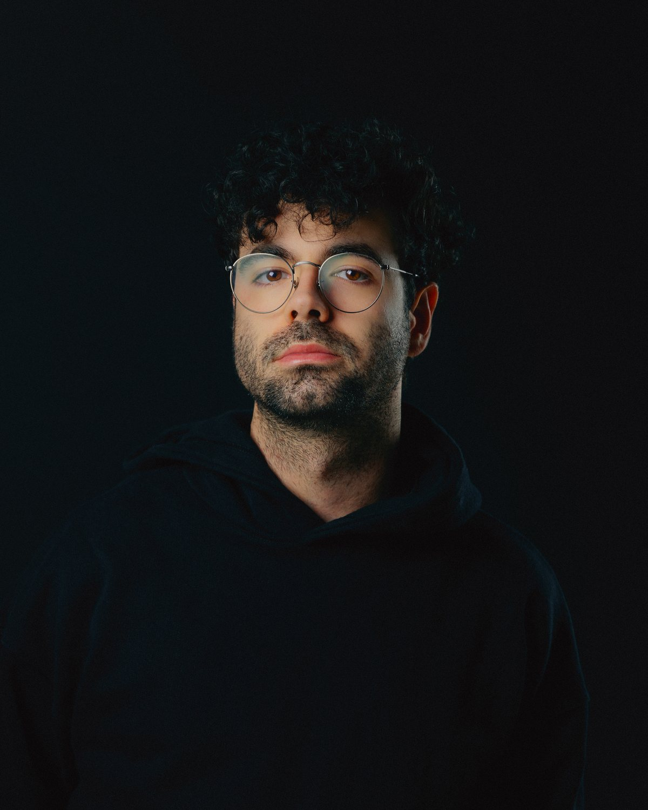

Francisco Gaspar

Francisco Gaspar é um artista visual cujo trabalho explora a interseção entre a documentação histórica e a narrativa contemporânea. O seu projeto pessoal, “Sidewalk Trees”, valeu-lhe o reconhecimento como Featured Artist no Al-Tiba9 Directory 2025 e levou à sua participação em exposições internacionais como The Alchemical Art e a Carlotta Gallery.
Com uma carreira profundamente enraizada na preservação do património, colabora regularmente com o Museu de Arqueologia D. Diogo de Sousa e com o Museu Alberto Sampaio, onde assegura a documentação e a direção criativa de catálogos. A sua prática estende-se à cena das artes performativas, colaborando com instituições como: Casa da Música, gnration, Braga25 (Capital Portuguesa da Cultura).
Para além do seu trabalho em fotografia de arquitetura e de interiores, com mais de 400 projetos documentados, Francisco é fundador da Tap Juice, uma plataforma dedicada ao diálogo artístico e cultural.
Esta versatilidade, que transita com naturalidade entre o rigor técnico e a direção criativa, confere-lhe uma sensibilidade refinada na construção de identidades visuais e na documentação de processos artísticos complexos.
Fotografia e vídeo · Braga